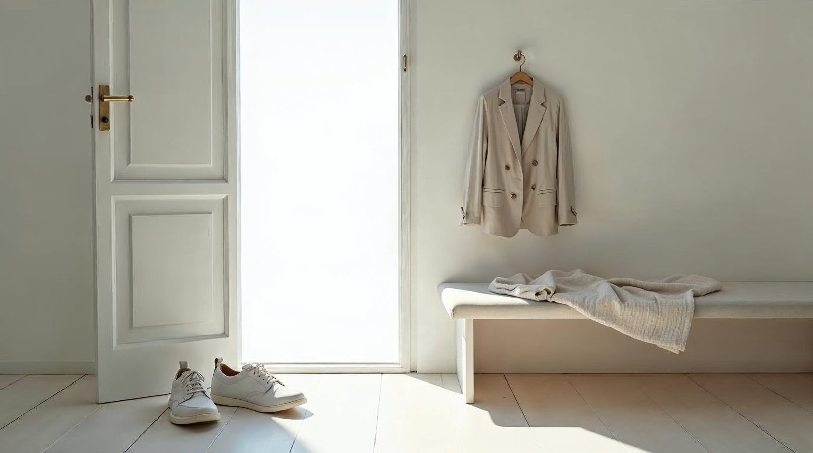
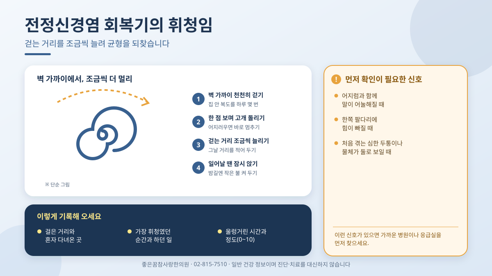

이종호 한의사 감수좋은꿈참사랑한의원 대표원장 (한의사 면허번호 19769)발행 2026-11-26 · 수정 2026-11-26
이 글의 차례
며칠 전까지만 해도 천장이 쉬지 않고 돌아 화장실에 가는 것조차 벽을 짚고 기어가야 했습니다. 이비인후과에서 전정신경염이라는 말을 듣고 약을 먹으며 누워 지내다 보니, 그 무서운 회전은 조금씩 잦아들었습니다.
그런데 이상합니다. 이제 방은 돌지 않는데, 고개를 휙 돌리면 세상이 반 박자 늦게 따라오는 느낌이 듭니다. 마트 진열대 사이를 걸을 때면 속이 울렁거리고, 사람 많은 지하철 계단에서는 발이 허공을 딛는 것처럼 휘청입니다.
전정신경염은 몸의 균형을 맡은 전정신경에 염증이 생겨 갑자기 심한 회전성 어지럼이 오는 상태입니다. 대개 하루에서 며칠 동안 심한 어지럼과 구토가 이어지고, 그 뒤 몇 주에서 몇 달에 걸쳐 서서히 회복되는 흐름을 보인다고 알려져 있습니다.
이 글은 그 회복기, 즉 큰 어지럼은 지나갔지만 몸이 아직 균형을 완전히 되찾지 못한 시기를 어떻게 지낼지에 대한 이야기입니다. 진단과 치료는 이비인후과에서 받으시고, 한의원에서는 그 곁에서 잠과 기운, 굳은 목과 어깨, 마음의 긴장을 함께 살핍니다.
회복기에 계신 분들은 "다 나은 것 같은데 왜 아직도 이렇죠?" 하고 답답해하십니다. 겉으로 보기에는 멀쩡해 보이니 주변에 말하기도 어렵습니다. 그 애매한 불편함이 얼마나 지치게 하는지 잘 알고 있습니다.
전정신경염은 무엇이 다친 걸까요
우리 몸의 균형은 세 가지 정보가 모여 만들어집니다. 눈으로 보는 정보, 발바닥과 관절이 느끼는 정보, 그리고 속귀의 전정기관이 느끼는 머리의 움직임 정보입니다. 뇌는 이 셋을 맞춰 보며 지금 내가 똑바로 서 있는지 판단합니다.
전정신경염은 이 가운데 한쪽 속귀에서 뇌로 가는 전정신경에 염증이 생긴 상태입니다. 원인으로는 바이러스 감염이 많이 이야기되며, 감기를 앓은 뒤나 몸이 많이 지쳤을 때 시작되었다는 분이 많습니다.
한쪽 신경이 갑자기 약해지면, 양쪽 귀에서 오는 신호의 균형이 깨집니다. 뇌는 몸이 계속 한쪽으로 도는 것으로 받아들이고, 그래서 처음 며칠은 가만히 있어도 세상이 도는 심한 어지럼이 생깁니다.
시간이 지나면 신경 자체가 회복되기도 하고, 뇌가 바뀐 신호에 맞춰 적응해 가기도 합니다. 이 적응을 '전정 보상'이라고 부릅니다. 회복기의 휘청임은 뇌가 아직 이 새 균형에 익숙해지는 중이라는 뜻으로 볼 수 있습니다.
한의학에서는 이런 어지럼을 현훈(眩暈)이라 부르며, 큰 병을 앓고 난 뒤 기운이 빠진 상태와 머리가 무겁고 속이 메스꺼운 상태를 나누어 살펴 왔습니다. 회복기에는 특히 잠과 식사, 기운이 얼마나 돌아왔는지를 함께 봅니다.
회복기에 흔히 남는 불편함
큰 회전이 가라앉은 뒤에도 아래와 같은 불편함이 한동안 남을 수 있습니다.
고개를 빨리 돌릴 때의 흔들림
횡단보도에서 좌우를 볼 때, 뒤에서 부르는 소리에 고개를 돌릴 때 순간 세상이 미끄러지듯 흔들립니다. 머리의 빠른 움직임을 처리하는 일이 아직 서툰 상태라서 생기는 경우가 많습니다.
복잡한 곳에서의 멀미 같은 느낌
마트의 긴 진열대, 사람이 많은 역, 화면이 빠르게 바뀌는 영상 앞에서 속이 울렁거리는 분이 많습니다. 눈으로 들어오는 움직임이 많을수록 뇌가 처리할 일이 늘어나기 때문입니다.
어두운 곳과 고르지 않은 길
밤길이나 불 꺼진 방, 울퉁불퉁한 산책로에서 더 휘청인다고 느끼실 수 있습니다. 눈의 정보가 줄고 발바닥 정보가 흔들리면, 아직 약한 전정 정보만으로 균형을 잡기가 어렵기 때문입니다.
피로와 머리의 무거움
하루 종일 균형을 잡느라 애쓰다 보니 저녁이면 유독 지치고 머리가 멍하다는 분이 많습니다. 목과 어깨에 힘을 잔뜩 주고 다니는 습관도 피로를 키웁니다.

왜 누워만 있으면 회복이 더딜 수 있을까요
처음 며칠, 세상이 쉬지 않고 도는 동안에는 누워서 쉬는 것이 필요합니다. 하지만 큰 어지럼이 가라앉은 뒤에도 어지러울까 봐 계속 누워만 있으면, 뇌가 새 균형을 배울 기회가 줄어듭니다.
뇌는 실제로 움직이며 흔들려 보아야 그 흔들림에 맞춰 다시 균형을 맞춥니다. 그래서 이비인후과에서는 회복기에 머리와 눈을 일부러 움직이는 균형 운동을 안내하는 경우가 많습니다.
조금 어지러운 정도의 움직임을 조금씩 반복하는 것이 요령입니다. 너무 무리하면 메스꺼움이 심해져 다시 눕게 되고, 너무 조심하면 제자리걸음이 됩니다. 그 사이의 적당한 정도를 찾는 일을 함께 상의합니다.
움직임을 늘려 가는 순서는 대개 쉬운 것에서 어려운 것으로 갑니다. 앉아서 고개 돌리기, 서서 고개 돌리기, 걸으며 고개 돌리기 순으로, 또 밝은 곳에서 어두운 곳으로, 평평한 길에서 고르지 않은 길로 넓혀 갑니다.
운동을 하고 나서 메스꺼움이 30분 안쪽으로 가라앉는다면 대개 적당한 정도로 봅니다. 하루 종일 울렁거림이 남는다면 다음 날은 양을 조금 줄여 보세요. 이렇게 몸의 반응을 보며 조절하는 것이 오래 이어 가는 요령입니다.
먼저 이렇게 여쭙니다
처음 오시면 저는 대략 이런 순서로 여쭙습니다. 기억나는 것부터 말씀해 주셔도 괜찮습니다.
- 처음 어지럼이 시작된 날과 그때의 모습(돌았는지, 토했는지, 며칠 이어졌는지)
- 그 무렵 감기나 몸살을 앓았는지, 많이 지쳐 있었는지
- 지금은 어떤 때 가장 휘청이나요? 고개 돌릴 때, 걸을 때, 복잡한 곳에서?
- 귀가 먹먹하거나 잘 안 들리는 느낌은 없나요?
- 이비인후과 검사 결과와 지금 드시는 약, 안내받은 운동은 무엇인가요?
- 잠과 식사, 기운은 처음과 비교해 얼마나 돌아왔나요?
어지럼만 여쭙지 않고 그 어지럼이 생활을 어떻게 바꿔 놓았는지도 함께 여쭙습니다. 출근을 미루고 있는지, 운전을 쉬고 있는지, 혼자 외출하기가 겁나는지가 다음에 무엇부터 챙길지를 정해 줍니다.
일상에서 먼저 해 볼 수 있는 것
회복기에는 조금씩, 꾸준히 움직임을 늘려 가는 것이 바탕입니다. 이비인후과에서 안내받은 운동이 있다면 그것을 먼저 하시고, 아래에서 지금 할 수 있는 것 하나부터 골라 보세요.
- 집 안 복도를 벽 가까이에서 하루 몇 번 천천히 걷기
- 한 점을 바라보며 고개를 좌우로 천천히 돌려 보기(어지러우면 바로 멈추기)
- 걷는 거리를 매일 조금씩 늘리고, 그날 걸은 거리를 적어 두기
- 밤에 화장실 가는 길에 작은 불을 켜 두기
- 일어날 때는 침대 끝에 잠시 앉아 숨을 고른 뒤 일어나기
- 목과 어깨에 힘이 들어가 있지 않은지 하루 몇 번 확인하고 내려놓기
마트나 역처럼 복잡한 곳은 처음에는 사람이 적은 시간에 짧게 다녀와 보세요. 익숙해지면 머무는 시간을 조금씩 늘려 갑니다. 처음부터 붐비는 시간에 오래 있으면 지쳐서 다시 피하게 되기 쉽습니다.
식사는 거르지 않는 것이 좋습니다. 어지럼 뒤에는 입맛이 없고 속이 울렁거려 끼니를 건너뛰기 쉬운데, 몸이 지치면 회복도 함께 더뎌집니다. 소화가 편한 음식으로 조금씩 자주 드셔 보세요.
잠은 회복의 바탕입니다. 잠들기 직전까지 휴대폰 화면을 보면 눈과 머리가 쉬지 못합니다. 잠자리에 드는 시각을 일정하게 맞추고, 누우면 화면을 내려놓는 습관부터 들여 보세요.
한의원에서 함께 살필 수 있는 경우
- 이비인후과 치료와 균형 운동을 이어 가면서 잠과 기운을 함께 살피고 싶은 경우
- 큰 어지럼이 지나간 뒤에도 머리가 무겁고 속이 울렁거리는 느낌이 오래 남는 경우
- 균형을 잡느라 목과 어깨가 늘 굳어 있고 저녁이면 크게 지치는 경우
- 다시 어지러울까 걱정되어 외출과 움직임을 계속 피하게 되는 경우
좋은꿈참사랑한의원에 처음 오시면 이비인후과 진료 기록과 드시는 약을 먼저 확인합니다. 그다음 양손을 올려 달라고 말씀드리고 맥을 짚으며 잠과 소화, 대소변, 땀, 기운을 여쭙습니다.
진찰 뒤에는 상태에 따라 굳은 목과 어깨, 손발의 자리를 살피며 침을 상의할 수 있습니다. 누웠다 일어날 때 어지러울 수 있으니, 자세를 바꿀 때는 천천히 도와 드리고 충분히 앉아 계시다가 일어나시도록 안내합니다.
한약은 진찰 뒤 필요하다고 판단될 때 상의합니다. 이비인후과에서 받은 약이 있다면 이름을 모두 알려 주세요. 함께 드셔도 되는지 신중하게 확인하고 정합니다. 처방받은 약은 처방한 의사와 상의 없이 줄이거나 끊지 않습니다.
다시 오시면 지난번 이후 어떤 움직임이 편해졌는지, 아직 어려운 것은 무엇인지부터 이어서 여쭙습니다. 회복은 하루하루보다 몇 주 단위로 보아야 흐름이 잘 보입니다.
이렇게 기록해 오시면 상담이 쉬워집니다
회복기의 변화는 작아서 놓치기 쉽습니다. 2주만 적어 보세요.
- 그날 걸은 거리나 시간, 혼자 다녀온 곳
- 가장 휘청였던 순간과 그때 하던 일
- 속이 울렁거린 시간과 정도(0부터 10까지 숫자로)
- 잠든 시각과 깬 시각, 낮에 누워 있던 시간
- 균형 운동을 했는지, 했을 때 어땠는지
- 드신 약과 시각
휴대폰 메모에 짧게 적어도 충분합니다. 빠진 날이 있어도 괜찮습니다. 기억나는 줄부터 같이 펼쳐 보겠습니다.
마음이 먼저 움츠러들 때
전정신경염을 겪은 분들은 그 첫날의 공포를 오래 기억하십니다. 그래서 몸은 조금씩 회복되는데 마음이 먼저 움츠러들어, 괜찮은 날에도 외출을 망설이게 됩니다.
이럴 때는 '어지러우면 어떡하지'보다 '어지러우면 이렇게 하자'를 미리 정해 두는 것이 도움이 됩니다. 앉을 자리를 확인하고, 물을 챙기고, 함께 갈 사람과 약속을 잡아 두는 것만으로도 발을 내딛기가 한결 쉬워집니다.
회복에는 시간이 얼마나 걸릴까요
회복의 속도는 사람마다 꽤 다릅니다. 몇 주 만에 일상으로 돌아가는 분도 있고, 몇 달에 걸쳐 조금씩 나아지는 분도 있습니다. 처음 어지럼이 얼마나 심했는지, 나이와 평소 체력, 회복기에 얼마나 움직였는지가 함께 영향을 준다고 알려져 있습니다.
그래서 다른 사람과 견주기보다 지난주의 나와 견주어 보시길 권합니다. 지난주에는 마트에 10분 있었는데 이번 주에는 20분 있었다면, 그것이 바로 회복의 흔적입니다. 기록을 해 두면 이런 변화가 눈에 보여 마음이 한결 놓입니다.
피곤한 날이나 감기 기운이 있는 날에는 잠시 예전의 휘청임이 돌아온 듯 느껴질 수 있습니다. 이럴 때 너무 낙담하지 마시고 그날은 쉬어 가며 몸을 살피세요. 회복은 곧은 선보다 오르내리는 계단에 가깝습니다. 계단 하나를 다시 내려간 듯한 날에도 전체 흐름은 위를 향하고 있을 수 있습니다.
일터와 일상으로 돌아갈 때
출근을 다시 시작할 때는 첫 주를 가볍게 계획해 보세요. 가능하다면 붐비는 출퇴근 시간을 조금 피하고, 하루 중 잠깐 눈을 감고 쉴 수 있는 틈을 만들어 두는 것이 좋습니다.
모니터를 오래 보는 일이라면 화면을 너무 가까이 두지 말고, 한 시간에 한 번은 먼 곳을 바라보며 고개와 어깨를 풀어 주세요. 스크롤이 빠른 화면이나 흔들리는 영상은 처음에는 짧게 보는 편이 덜 지칩니다.
가족이 함께 알아 두면 좋은 것
곁에서 보는 가족은 이제 걷기도 하고 밥도 먹으니 다 나았다고 여기기 쉽습니다. 하지만 겪는 분은 고개를 돌릴 때마다, 계단을 내려갈 때마다 마음속으로 균형을 붙잡고 있습니다.
산책을 함께 나가 주고, 복잡한 곳에 갈 때 곁에서 천천히 걸어 주는 것만으로도 큰 힘이 됩니다. "아직도 어지러워?"보다 "오늘은 어디까지 걸어 볼까?"라고 물어 주시면 회복을 함께 걷는 느낌이 듭니다. 집 안 바닥에 걸려 넘어질 만한 물건을 치워 두고, 계단과 욕실에 손잡이나 미끄럼 방지 매트를 두는 것도 함께할 수 있는 일입니다.
이런 증상은 먼저 확인이 필요합니다
- 어지럼과 함께 말이 어눌해지거나 한쪽 팔다리에 힘이 빠지는 경우
- 처음 겪는 심한 두통이나 물체가 둘로 보이는 증상이 함께 온 경우
이런 신호가 있으면 한의원보다 가까운 병원이나 응급실을 먼저 찾으세요.
세상이 돌던 그 며칠을 지나 여기까지 오신 것만으로도 큰 고비를 넘기셨습니다. 남은 휘청임은 몸이 새 균형을 배우는 과정일 수 있습니다. 서두르지 않고 한 걸음씩 함께 살펴보겠습니다. 오늘 집 앞을 한 바퀴 걸어 보신 것도 분명한 한 걸음입니다. 다음에 오시면 지난 2주 동안 어디까지 걸어 보셨는지부터 여쭙겠습니다.
함께 읽으면 좋은 글
- 귀가 꽉 막힌 듯 먹먹하다가 빙빙 도는 어지럼이 몇 시간씩 오는 메니에르병은 어떻게 살피나요?
- 돌아누울 때 세상이 빙빙 도는 이석증 어지럼은 어떻게 살피나요?
- 어지럼이 빙빙 도는지, 아찔한지는 어떻게 구분해서 전하나요?
- 지하철역 계단을 오르내릴 때 어지럽고 다리가 휘청할 때는 어떻게 살피나요?

여쭙는 것
- 처음 어지럼이 시작된 날과 그때의 모습(돌았는지, 토했는지, 며칠 이어졌는지)
- 그 무렵 감기나 몸살을 앓았는지, 많이 지쳐 있었는지
- 지금은 어떤 때 가장 휘청이나요? 고개 돌릴 때, 걸을 때, 복잡한 곳에서?
생활에서 해 볼 것
- 집 안 복도를 벽 가까이에서 하루 몇 번 천천히 걷기
- 한 점을 바라보며 고개를 좌우로 천천히 돌려 보기(어지러우면 바로 멈추기)
- 걷는 거리를 매일 조금씩 늘리고, 그날 걸은 거리를 적어 두기
한의원에서 함께 살필 것
- 이비인후과 치료와 균형 운동을 이어 가면서 잠과 기운을 함께 살피고 싶은 경우
- 큰 어지럼이 지나간 뒤에도 머리가 무겁고 속이 울렁거리는 느낌이 오래 남는 경우
- 균형을 잡느라 목과 어깨가 늘 굳어 있고 저녁이면 크게 지치는 경우
먼저 확인이 필요한 신호
- 어지럼과 함께 말이 어눌해지거나 한쪽 팔다리에 힘이 빠지는 경우
- 처음 겪는 심한 두통이나 물체가 둘로 보이는 증상이 함께 온 경우
한눈에 보는 표
| 구분 | 핵심 |
|---|---|
| 여쭙는 것 | 처음 어지럼이 시작된 날과 그때의 모습(돌았는지, 토했는지, 며칠 이어졌는지) 그 무렵 감기나 몸살을 앓았는지, 많이 지쳐 있었는지 |
| 생활에서 해 볼 것 | 집 안 복도를 벽 가까이에서 하루 몇 번 천천히 걷기 한 점을 바라보며 고개를 좌우로 천천히 돌려 보기(어지러우면 바로 멈추기) |
| 한의원에서 함께 살필 것 | 이비인후과 치료와 균형 운동을 이어 가면서 잠과 기운을 함께 살피고 싶은 경우 큰 어지럼이 지나간 뒤에도 머리가 무겁고 속이 울렁거리는 느낌이 오래 남는 경우 |
| 먼저 확인이 필요한 신호 | 어지럼과 함께 말이 어눌해지거나 한쪽 팔다리에 힘이 빠지는 경우 처음 겪는 심한 두통이나 물체가 둘로 보이는 증상이 함께 온 경우 |
자주 묻는 질문
큰 어지럼이 지나간 뒤에도 휘청이는 것은 정상인가요?
전정신경염 뒤에는 뇌가 바뀐 균형 신호에 적응하는 동안 고개를 돌릴 때나 복잡한 곳에서 휘청임이 한동안 남을 수 있다고 알려져 있습니다. 다만 새로운 증상이 생기거나 점점 심해진다면 이비인후과에 다시 확인하시길 권합니다.
어지러운데 움직여도 되나요?
큰 어지럼이 가라앉은 뒤에는 조금 어지러운 정도의 움직임을 천천히 늘려 가는 것이 회복에 도움이 될 수 있습니다. 이비인후과에서 안내받은 균형 운동이 있다면 그것을 먼저 이어 가세요.
이비인후과 약을 먹고 있는데 한의원 진료를 함께 받아도 되나요?
드시는 약을 모두 알려 주시면 확인한 뒤 진찰을 거쳐 정합니다. 처방받은 약은 처방한 의사와 상의 없이 줄이거나 끊지 않습니다.
운전은 언제부터 다시 해도 될까요?
고개를 빨리 돌려도 흔들림이 없고 일상 움직임이 편해졌는지가 중요합니다. 안전과 직결되는 일이라 이비인후과 선생님과 상의해 정하시길 권합니다.
좋은꿈참사랑한의원은 재진 때 지난번 이야기부터 이어서 여쭙니다. 진료시간과 예약은 오시는 길에서 확인하세요.
어디서 상담받을 수 있나요?
좋은꿈참사랑한의원은 서울 동작구 만양로2길 2 신성빌딩 3층·5층(서울 동작구 상도동, 7호선 상도역 3번 출구 근처)에 있습니다. 한의사 3명(이종호 대표원장, 조영기 수석진료원장, 정원영 진료원장)이 진료합니다. 진료시간은 평일 09:30~20:00(점심 13:00~14:00), 토·일·공휴일 09:30~15:00이며, 방문 전 전화로 확인을 권합니다. 예약은 네이버 예약, 카카오톡 상담, 전화 02-815-7510로 받습니다.
이 글은 일반적인 건강 정보이며 개인의 진단이나 치료를 대신하지 않습니다. 증상이 있거나 복용 중인 약이 있다면 진료를 통해 확인하세요. 치료 효과는 개인마다 다를 수 있습니다.
작성 기준: 일반적으로 알려져 있는 건강 정보를 참고해 정리했습니다(대표원장 감수). 증상 기록은 1~2주 동안 하루 1회, 비슷한 시간에 적어 오시면 지난 상태와 비교하기 쉽습니다.